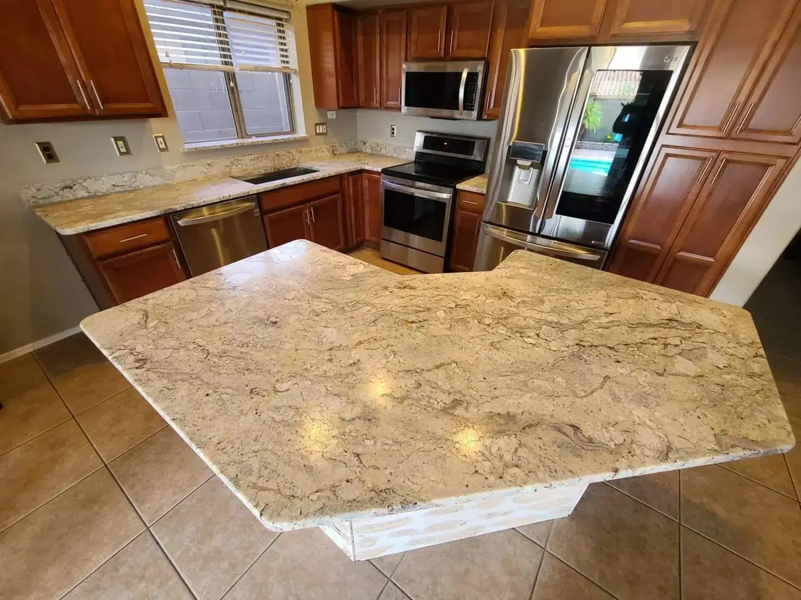
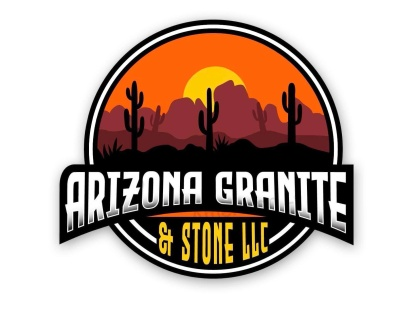
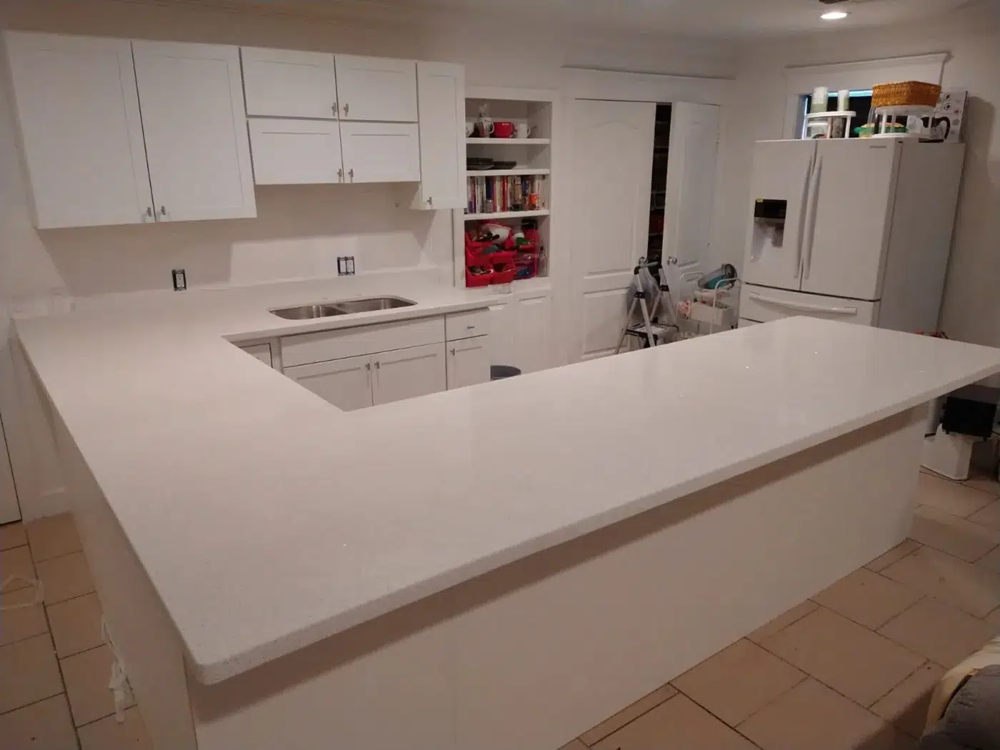
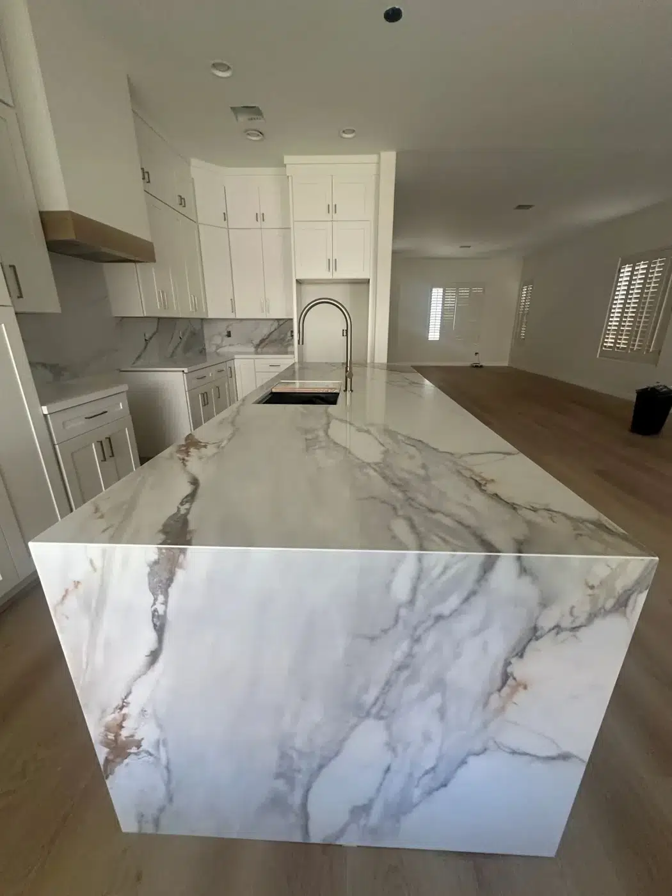

01Granite
Individual patterns, mineral depth and natural character. A distinctive starting point for your space.

Plan your project ↗CUSTOM STONE. PERSONAL CRAFTSMANSHIP.
Granite, quartz and marble, shaped around the way you live. Fabrication, installation and stone repair from our team in Waddell, Arizona.
↙01 / OUR WAY OF WORKING
At Arizona Granite & Stone, quality is our best discount. We care about the details of your project—and the people who will live with them every day.
Our team guides you step by step, from your first ideas to the stonework that brings your space together. Friendly, respectful service. Work shaped around your home.
02 / A CLOSER LOOK
Explore stonework from our original portfolio.
Every photograph has a detail worth seeing.
THE COMPLETE COLLECTION
Browse the original image collection.
Select any photograph for a full-screen view.
Project photography, edge references and inspiration imagery from the original website.
03 / MATERIAL MATTERS

01Individual patterns, mineral depth and natural character. A distinctive starting point for your space.

02A composed palette with a wide range of engineered patterns. Designed for a considered interior.

03Expressive veining and enduring appeal. A natural surface with character that develops over time.
Photographs illustrate design directions. Confirm the material, finish and actual slab with our team.
THE MATERIAL EDIT
Beauty is personal.
The practical details should be clear.
| What matters | Granite | Quartz | Marble |
|---|---|---|---|
| The character | Natural mineral patterns; each slab is individual. | Engineered patterns, from quiet solids to expressive veining. | Natural veining with a softer, classic presence. |
| Everyday care | Ask about sealing for your selected slab. | No routine sealing; follow the manufacturer's care guide. | Plan for sealing, prompt cleanup and a developing patina. |
| Heat & spills | Use trivets and clean spills promptly. | Protect from hot cookware and prolonged heat. | Acidic spills can etch; use trivets and coasters. |
| Outdoor plans | Discuss the specific slab, finish and exposure. | Most products are intended for interiors; verify outdoor approval. | Discuss weather exposure and maintenance expectations. |
General selection guidance. Confirm suitability, finish, availability and care for the actual product before ordering.
Build a project brief around your choice ↗04 / A CLEAR WAY FORWARD
You bring the vision.
We help you work through the details.
Share your room, inspiration and priorities. Photos and approximate dimensions help start the conversation.
Discuss your material, layout, edges and the details that make the finished piece yours.
Coordinate measurements, fabrication and installation with the team. Confirm scope and timing before work begins.
THE PROJECT STUDIO
A few thoughtful choices turn an idea into a useful first conversation. Explore a direction, then bring it to the team.
BEFORE THE FIRST CUT
Start with the information you have. The team can help you work through the rest.
Talk to the team · 623 498 9056 ↗Room photos, approximate dimensions, material inspiration and any cabinet plans are useful. Include your city, desired timing and sink or appliance details if you have them. Final fabrication requires confirmed project measurements.
Material selection, slab usage, layout, edge details, cutouts, backsplashes, access and installation scope all influence a quote. Ask the team to clarify what is included, including any removal, plumbing or preparation work.
Contact the team to arrange a material conversation by appointment. Confirm where the actual slabs can be viewed and what is available for your project; screen images are a starting point, not a final color match.
Timing depends on material availability, project readiness, fabrication scope and the installation schedule. Share your target date so the team can confirm a realistic timeline for your project.
Arizona Granite & Stone offers vanity tops, fireplaces, barbecue surfaces and full-slab wall applications, along with fabrication, installation and stone repair. Discuss the requirements of your particular space with the team.
8539 N 143rd Ave, Waddell, AZ 85355. Visits are by appointment only. Share your project address when you contact us to confirm service availability.
05 / YOUR NEXT CHAPTER
Have a project in mind? Tell us about your space.
623 498 9056 ↗arizonagraniteandstone@gmail.com8539 N 143rd Ave, Waddell, AZ 85355
Visits by appointment only.